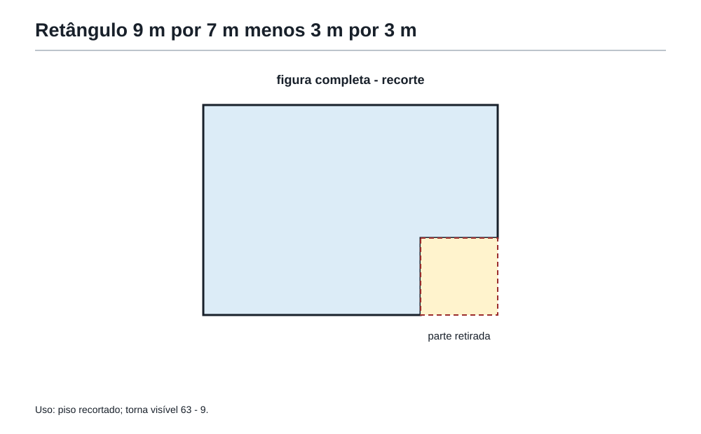
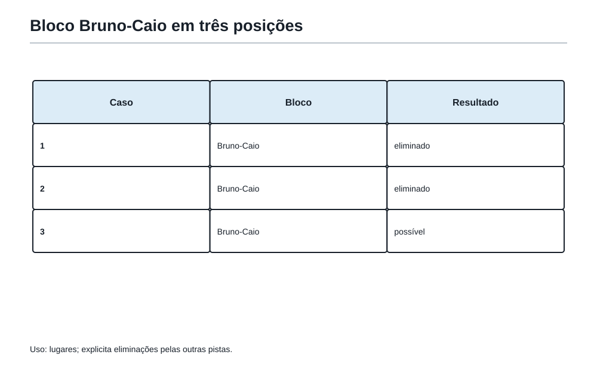
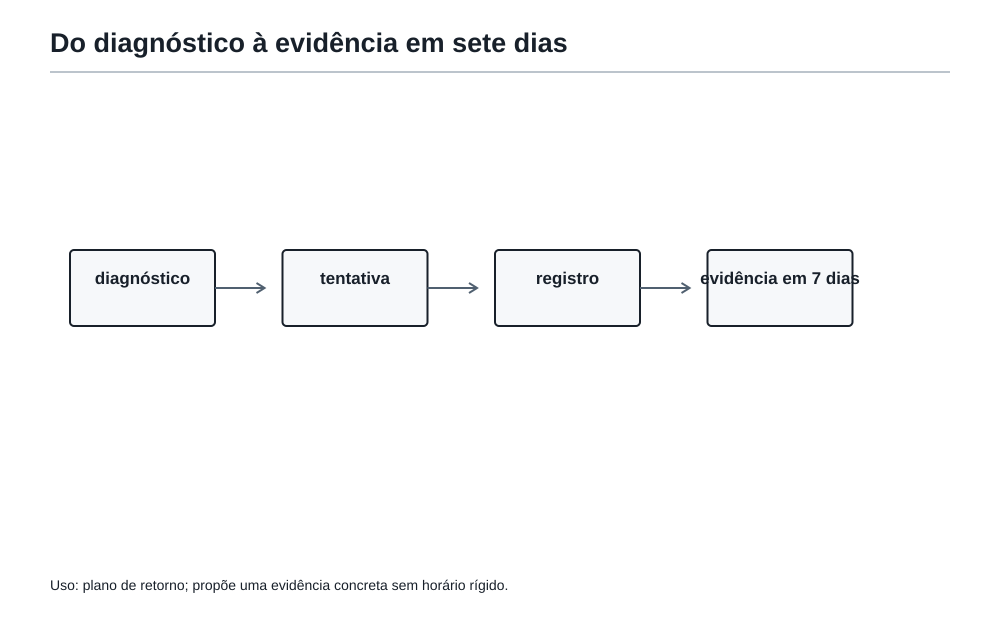

Sem rodinhas
1. Quando as placas diminuem
Na sala dos simulados, Felipe encontrou outra prova sobre a mesa. Ela tinha problemas de números, figuras, caminhos, posições e transformações. Mas havia uma diferença importante: desta vez, o Professor não tinha marcado questões verdes, amarelas ou vermelhas.
Também não havia uma frase dizendo qual ferramenta procurar em cada enunciado.
Felipe olhou para a prova e perguntou:
— E agora, como eu sei por onde começar?
— Você não precisa saber tudo antes de começar — respondeu o Professor. — Precisa observar o que a sua tentativa mostra.
No capítulo anterior, a Academia iluminou algumas portas para ensinar o percurso de uma prova. Agora as luzes iniciais diminuem. As ferramentas continuam na Mochila, mas a escolha passa a ser de Felipe.
Isso não é um teste para descobrir se ele “tem dom” ou não. É uma forma mais honesta de treinar quatro capacidades:
- reconhecer sozinho uma porta de entrada;
- registrar uma tentativa antes que ela se perca;
- entender com precisão onde surgiu a dificuldade;
- escolher um treino pequeno que responda a essa dificuldade.
Um simulado menos guiado não serve para deixar o estudante sozinho diante do erro. Ele serve para fazer o erro falar com mais clareza.
Faça a primeira tentativa antes de consultar uma família, uma cor ou uma ferramenta sugerida. A ajuda volta depois como correção e diagnóstico, não como resposta antecipada.
Depois de tentar um problema, anote mentalmente ou no caderno qual foi sua primeira escolha, onde travou e qual pista ficou. O registro vale mais do que um simples “não consegui”.
2. Antes de começar: um combinado justo
“Sem rodinhas” não significa “sem método”. Antes de um simulado autônomo, Felipe ainda pode fazer o que já aprendeu:
- ler a pergunta final de cada problema;
- fazer uma primeira volta sem se obrigar a resolver tudo na ordem;
- trocar uma representação quando a primeira não ajuda;
- testar um caso pequeno;
- pausar deixando uma observação verdadeira;
- revisar uma resposta com os cinco olhos.
A mudança é outra: antes de descobrir a solução, ele não recebe a família do problema, a cor inicial nem a primeira jogada pronta.
Há uma diferença importante entre duas frases:
“Não sei resolver este problema.”
“Comecei por uma tabela, encontrei três casos, mas não consegui justificar que eram todos.”
A segunda frase ainda não é uma solução. Mas já é informação matemática. Ela mostra que a porta escolhida, a tentativa e o ponto de travamento podem ser examinados.
Durante uma prova, não é necessário interromper o raciocínio para escrever um relatório completo. Basta deixar uma marca curta, por exemplo:
- “tentei listar múltiplos”;
- “desenho mostrou dois caminhos”;
- “bloco BC parece útil”;
- “paridade talvez não mude”;
- “cheguei ao resultado; falta provar que não há outro”.
Essa é a folha de bordo: não uma folha para preencher por obrigação, mas um modo de tornar visível o caminho percorrido.
| O que registrar | Pergunta curta |
|---|---|
| Pedido | O que preciso encontrar, calcular ou provar? |
| Primeira escolha | O que tentei primeiro? |
| Pista | O que descobri que é certamente verdadeiro? |
| Travamento | O que ainda não sei ligar? |
| Próxima volta | Que pergunta farei quando retornar? |
Decisão de figura — dispensar. A tabela imediatamente anterior já contém os cinco campos e suas perguntas; não criar uma segunda ficha de folha de bordo.
Registre pedido, primeira escolha, pista, travamento e próxima volta de modo breve. A folha protege a rota; não é uma tarefa burocrática.
Troque “travei” por uma frase precisa: “não entendi o pedido”, “não sei escolher a ferramenta”, “a ideia não terminou”, “não sei justificar” ou “preciso conferir a conta”.
3. Simulado autônomo — Primeiro tente, depois compare
Os seis problemas a seguir são originais, em estilo OBMEP. Eles foram escolhidos para conversar com ferramentas já estudadas, mas essa informação não deve decidir sua primeira tentativa.
Faça uma primeira leitura de todos. Escolha por onde começar. Quando sentir que uma questão não produz informação nova, deixe uma pista e visite outra.
Não há tempo obrigatório e não há uma ordem certa. O desafio é observar sua própria rota.
Problema 1 — As caixas de materiais
A Academia recebeu 82 cadernos para organizar em caixas com capacidade para 12 cadernos cada. Todas as caixas usadas devem ficar completas, exceto possivelmente a última. Quantas caixas são necessárias no mínimo?
Problema 2 — A senha
A senha de uma porta é um número de dois algarismos entre 50 e 90. Ela é múltipla de 7 e deixa resto 2 quando dividida por 5. Qual é a senha?
Problema 3 — O piso recortado
Um piso retangular mede 9 m por 7 m. De um de seus cantos foi retirado um quadrado de 3 m de lado para abrir espaço para uma coluna. Qual é a área restante do piso?
Problema 4 — O caminho proibido
Para ir de A até B pelo caminho mais curto em uma malha, são necessários 3 passos para a direita e 2 passos para cima. O ponto P fica depois de 1 passo para a direita e 1 passo para cima a partir de A. Quantos caminhos mais curtos de A até B não passam por P?
Problema 5 — Os quatro lugares
Ana, Bruno, Caio e Davi sentam-se em quatro lugares de uma fila, um por lugar. Sabe-se que:
- Bruno senta-se imediatamente antes de Caio.
- Ana não se senta no primeiro lugar.
- Davi senta-se depois de Ana.
Qual é a ordem da fila, do primeiro ao último lugar?
Problema 6 — As cartas viradas
Sobre uma mesa há 17 cartas viradas para cima. Em cada jogada, escolhem-se exatamente 4 cartas e todas elas são viradas: as que estavam para cima ficam para baixo, e as que estavam para baixo ficam para cima. É possível terminar com todas as cartas para baixo?
4. A pausa que transforma tentativa em dado
Antes de ler as soluções comentadas, faça uma pausa curta. Não pergunte apenas “quantas acertei?”. Pergunte sobre cada problema:
- Qual foi minha primeira escolha?
- Essa escolha produziu alguma informação nova?
- Em que momento eu soube que deveria insistir, trocar de forma ou pausar?
- Minha resposta ficou escrita de um jeito que outra pessoa pode conferir?
Você pode resumir cada problema com uma das quatro situações abaixo:
| Situação | O que ela significa | O que fazer depois |
|---|---|---|
| Resolvido com segurança | A ideia e a justificativa apareceram. | Revisar os cinco olhos e seguir. |
| Resolvido com dúvida | Há resultado, mas falta conferir um salto. | Procurar unidade, caso esquecido ou explicação. |
| Travado com pista | Algo verdadeiro foi descoberto. | Registrar a pista e retomar depois. |
| Travado sem pista | A entrada ainda não apareceu. | Voltar ao pedido e trocar a representação. |
Uma tentativa travada com pista costuma ensinar mais do que uma resposta copiada depressa. Ela mostra exatamente de onde recomeçar.
Depois de um problema, avalie duas coisas: a resposta está correta? E o caminho escolhido seria confiável em outro problema parecido?
5. Correção comentada — Ler o que a tentativa revelou
Agora compare suas decisões com uma rota possível. Em matemática, outra rota correta pode existir. A correção não serve para apagar sua tentativa; serve para localizar o que ela já continha e o que ainda faltava.
Refaça uma solução com suas próprias palavras: pedido, ideia decisiva, desenvolvimento e fecho. Comparar não basta quando a rota ainda não pode ser reconstruída.
Problema 1 — As caixas de materiais
O pedido final é uma quantidade mínima de caixas, não apenas uma divisão.
Cada caixa comporta 12 cadernos. Se usarmos 6 caixas, teremos espaço para:
6 × 12 = 72 cadernos.
Ainda faltam 82 - 72 = 10 cadernos. Portanto, é necessária mais uma caixa.
Resposta: são necessárias 7 caixas.
Também seria possível calcular 82 ÷ 12, obtendo 6 caixas completas e resto 10. O cuidado decisivo é não responder 6: os 10 cadernos restantes também precisam caber em uma caixa.
O que este problema pode revelar sobre a rota: se você encontrou 6, talvez tenha lido a divisão mas perdido a pergunta final. Se encontrou 7 sem explicar por quê, falta apenas tornar visível a ideia de quantidade mínima e caixas inteiras.
Problema 2 — A senha
Uma boa primeira escolha é usar uma condição como filtro e depois testar a outra.
Os múltiplos de 7 entre 50 e 90 são:
56, 63, 70, 77, 84.
Ao dividir esses números por 5, os restos são respectivamente:
1, 3, 0, 2, 4.
Apenas 77 deixa resto 2.
Resposta: a senha é 77.
Não era necessário verificar todos os números de 50 a 90. A primeira condição reduziu a busca a cinco candidatos.
O que este problema pode revelar sobre a rota: se você listou todos os números do intervalo e chegou a 77, a resposta está certa, mas uma ferramenta de filtro pode tornar o trabalho mais leve. Se você usou apenas uma condição, a revisão deve perguntar: “provei que o candidato também respeita a outra?”.
Problema 3 — O piso recortado
O desenho pode ser imaginado como uma figura grande da qual foi retirado um pedaço menor.
A área do retângulo inteiro é:
9 × 7 = 63 m².
A área do quadrado retirado é:
3 × 3 = 9 m².
Logo, a área que permanece é:
63 - 9 = 54 m².
Resposta: a área restante é 54 m².
O resultado deve estar em metros quadrados, porque a pergunta é sobre espaço ocupado, não sobre o contorno do piso.
O que este problema pode revelar sobre a rota: se você calculou 9 + 7, talvez tenha trocado área por perímetro. Se obteve 54, mas sem unidade, o olho das unidades ainda tem trabalho.

Problema 4 — O caminho proibido
Cada caminho mais curto é uma sequência de 3 passos para a direita e 2 passos para cima. Há 5 passos no total; basta escolher em quais 2 posições ficam os passos para cima:
C(5,2) = 10 caminhos no total.
Agora contamos os caminhos que passam por P.
De A até P, há 1 passo para a direita e 1 para cima. Eles podem ocorrer em 2 ordens.
De P até B, faltam 2 passos para a direita e 1 para cima. Esses três passos podem ocorrer em 3 ordens.
Logo, passam por P:
2 × 3 = 6 caminhos.
Como P é proibido, subtraímos:
10 - 6 = 4.
Resposta: existem 4 caminhos mais curtos que não passam por P.
O que este problema pode revelar sobre a rota: se você contou 10, reconheceu os caminhos totais, mas ainda não incorporou a condição proibida. Se chegou a 6, encontrou a parte proibida; a pergunta final pedia o complemento. Se ficou sem entrada, desenhar a malha ou escrever sequências de letras são duas representações possíveis.
Problema 5 — Os quatro lugares
A primeira pista cria um bloco: Bruno-Caio.
Esse bloco pode ocupar os lugares 1 e 2, 2 e 3 ou 3 e 4.
- Se ocupasse 2 e 3, Ana ficaria no primeiro ou no quarto. Como Davi deve ficar depois de Ana, Ana teria de ficar no primeiro, o que é proibido.
- Se ocupasse 3 e 4, sobrariam os lugares 1 e 2 para Ana e Davi. Ana não pode ficar no primeiro; se ficar no segundo, Davi ficaria antes dela, o que é proibido.
- Portanto, o bloco ocupa os lugares 1 e 2.
Restam os lugares 3 e 4. Para Davi ficar depois de Ana, Ana fica em terceiro e Davi em quarto.
| Lugar | 1 | 2 | 3 | 4 |
|---|---|---|---|---|
| Pessoa | Bruno | Caio | Ana | Davi |
Resposta: Bruno, Caio, Ana, Davi.
O que este problema pode revelar sobre a rota: tentar todas as 24 filas é possível, mas pouco econômico. Transformar duas pessoas em bloco reduz o número de casos e deixa a explicação mais clara. Se sua fila final estava certa, confira se todas as pistas foram verificadas, não apenas as duas primeiras.

Problema 6 — As cartas viradas
Aqui não é útil testar jogadas ao acaso. Precisamos procurar algo que a regra preserve.
Em uma jogada, suponha que k das 4 cartas escolhidas estejam para cima. Então 4 - k estejam para baixo.
Depois de virar todas as quatro, k cartas deixam de estar para cima e 4 - k passam a estar para cima. Assim, a quantidade de cartas para cima muda em:
(4 - k) - k = 4 - 2k.
Esse número é sempre par. Portanto, a paridade da quantidade de cartas para cima não muda.
No início há 17 cartas para cima, uma quantidade ímpar. No final desejado haveria 0 cartas para cima, uma quantidade par. Isso é impossível.
Resposta: não é possível terminar com todas as cartas para baixo.
O que este problema pode revelar sobre a rota: se você tentou várias sequências de jogadas e não encontrou uma solução, ainda faltava provar que nenhuma sequência funciona. A paridade transforma uma observação em uma justificativa para todos os casos.
6. Diagnóstico: onde a rota pediu ajuda?
Depois da correção, o objetivo não é fazer uma lista longa de defeitos. É localizar a causa principal de cada dificuldade.
| Categoria | Como ela aparece | Pergunta de diagnóstico | Primeiro treino útil |
|---|---|---|---|
| Leitura | Respondi outra coisa, ignorei uma condição ou usei dado decorativo. | Qual palavra do pedido ou qual restrição eu deixei passar? | Relê enunciados e escreve o pedido em uma frase. |
| Escolha | Não encontrei uma entrada ou usei uma ferramenta distante do problema. | Que representação ou caso pequeno eu poderia testar? | Resolve problemas curtos escolhendo primeiro a família provável. |
| Desenvolvimento | Tive uma ideia, mas ela não chegou à conclusão. | Qual passo concreto faltou: conta, lista, caso ou ligação? | Completa soluções interrompidas, uma etapa por vez. |
| Escrita | A resposta pode estar certa, mas ninguém acompanha a razão. | Onde está a ideia decisiva no que escrevi? | Reescreve duas soluções com alvo, ferramenta, caminho e fecho. |
| Revisão | Faltou unidade, caso, condição ou coerência. | Qual dos cinco olhos eu não usei? | Confere respostas prontas procurando um tipo de falha por vez. |
| Cálculo | A estratégia era boa, mas uma operação mudou o resultado. | Posso verificar por estimativa ou operação inversa? | Faz poucas contas verificadas, sem misturá-las ao problema inteiro. |
O mesmo erro pode ter mais de uma camada. Por exemplo, uma resposta de 6 caixas no Problema 1 pode parecer erro de cálculo, mas a divisão pode estar correta. A causa real pode ser leitura: a pergunta pedia caixas necessárias, inclusive a última incompleta.
Por isso, o diagnóstico não deve usar rótulos vazios como “sou ruim em problemas”. Um diagnóstico útil aponta uma decisão treinável:
“Em problemas de caminhos, eu conto o total, mas esqueço de retirar os casos proibidos.”
Essa frase já sugere um próximo passo concreto.
Antes de refazer um problema, descubra se a dificuldade foi leitura, escolha, desenvolvimento, escrita, revisão ou cálculo. Treino sem diagnóstico repete esforço; treino com diagnóstico escolhe alvo.
7. Um plano de sete dias que cabe na vida real
Depois de um simulado, é tentador prometer: “Vou revisar tudo”. Essa promessa é grande demais para orientar o próximo dia.
Um plano útil escolhe uma prioridade principal e, no máximo, uma prioridade de apoio. O objetivo não é estudar sete horas por dia nem preencher uma agenda perfeita. É voltar durante uma semana ao tipo de decisão que precisa ficar mais forte.
Veja três exemplos de plano. Eles não são receitas obrigatórias; são modelos para adaptar.
| Diagnóstico principal | Prioridade da semana | Evidência de avanço |
|---|---|---|
| Esqueço condições e pedidos finais. | Leitura estratégica. | Consigo resumir pedido e restrições antes de calcular. |
| Tenho ideias, mas paro no meio. | Desenvolvimento da solução. | Consigo completar a ponte entre ideia e conclusão. |
| Chego a resultados sem justificativa. | Escrita e revisão. | Consigo mostrar a razão principal e conferir os cinco olhos. |
Exemplo A — Semana de leitura estratégica
| Dia | Ação pequena |
|---|---|
| 1 | Escolher três problemas curtos e escrever apenas o pedido final de cada um. |
| 2 | Marcar, em dois enunciados, os dados úteis, perigosos e decorativos. |
| 3 | Resolver um problema e conferir se a resposta está na unidade pedida. |
| 4 | Refazer um problema em que uma condição foi esquecida. |
| 5 | Escolher duas questões e dizer qual família parece ser a primeira porta. |
| 6 | Fazer um mini-simulado de três questões, registrando a primeira escolha. |
| 7 | Relê a folha de bordo e escreve uma frase sobre o que passou a notar. |
Exemplo B — Semana de desenvolvimento
| Dia | Ação pequena |
|---|---|
| 1 | Escolher duas soluções interrompidas e descobrir o próximo passo concreto. |
| 2 | Resolver um problema com tabela ou desenho, sem saltar da ideia à resposta. |
| 3 | Fazer um caso pequeno e explicar o que ele revelou. |
| 4 | Completar uma contagem separando total, casos proibidos e resultado pedido. |
| 5 | Resolver um problema de trás para frente e verificar no sentido direto. |
| 6 | Fazer duas questões com uma pausa planejada: deixar uma pista antes de trocar. |
| 7 | Comparar uma primeira tentativa com a versão final e nomear a ponte que faltava. |
Exemplo C — Semana de escrita e revisão
| Dia | Ação pequena |
|---|---|
| 1 | Reescrever uma resposta curta usando alvo, ferramenta, caminho e fecho. |
| 2 | Usar apenas o olho das unidades em três respostas antigas. |
| 3 | Usar apenas o olho dos casos esquecidos em uma lista ou contagem. |
| 4 | Explicar por que um resultado é possível ou impossível, sem apenas afirmar. |
| 5 | Comparar duas soluções: qual deixa a ideia decisiva mais visível? |
| 6 | Fazer um problema completo e revisar com os cinco olhos. |
| 7 | Escolher a melhor solução da semana e anotar o que a torna conferível. |
Uma semana não precisa terminar em perfeição. Ela precisa deixar uma evidência: uma leitura mais cuidadosa, uma ponte que antes faltava, uma justificativa mais clara ou um erro que agora é reconhecido mais cedo.
Escolha uma prioridade principal, uma ação pequena por dia e uma evidência observável de avanço. Não tente consertar a Mochila inteira em uma semana.
Depois da correção, nomeie o que sua primeira tentativa já tinha de útil e o passo que faria a rota ficar mais curta, clara ou completa.
Uma semana curta de treino é parte de um ciclo: ela devolve uma nova tentativa ao simulado, onde a ferramenta precisa aparecer sem ser anunciada.

Oficina8. Oficina Olímpica 12 — A rota é sua
Os desafios abaixo são originais, em estilo OBMEP. Antes das respostas, escolha sozinho uma primeira jogada e deixe uma pista se decidir pausar. Depois, faça um diagnóstico de uma frase: leitura, escolha, desenvolvimento, escrita, revisão ou cálculo.
Todos são problemas originais em estilo OBMEP de resposta determinada. O diagnóstico pedido depois de cada tentativa é uma atividade aberta de reflexão sobre a própria rota, não uma questão com gabarito único.
Desafio 1 — A última caixa
Uma biblioteca recebeu 95 livros e tem caixas para 15 livros cada. Quantas caixas são necessárias no mínimo?
Resposta comentada: 6 caixas comportam 90 livros; sobram 5. São necessárias 7 caixas. O ponto importante é responder caixas inteiras, não apenas o quociente.
Resposta: 7 caixas.
Desafio 2 — O número filtrado
Qual número entre 30 e 50 é múltiplo de 4 e deixa resto 1 na divisão por 3?
Resposta comentada: os múltiplos de 4 são 32, 36, 40, 44, 48. Seus restos por 3 são 2, 0, 1, 2, 0. Apenas 40 serve.
Resposta: 40.
Desafio 3 — O retângulo e o quadrado
Um retângulo de 8 cm por 6 cm perde um quadrado de 2 cm por 2 cm em um canto. Qual é a área restante?
Resposta comentada: área do retângulo: 48 cm²; área retirada: 4 cm²; área restante: 44 cm².
Resposta: 44 cm².
Desafio 4 — A fila possível
Lia, Nara e Otávio ficam em uma fila. Nara fica imediatamente antes de Otávio, e Lia não fica no primeiro lugar. Qual é a ordem?
Resposta comentada: o bloco Nara-Otávio não pode estar nas posições 2 e 3, pois Lia ficaria em primeiro. Logo, o bloco ocupa 1 e 2, e Lia fica em terceiro.
Resposta: Nara, Otávio, Lia.
Desafio 5 — A troca de moedas
Uma mesa começa com 9 moedas mostrando cara. Em cada jogada, exatamente 4 moedas são viradas. É possível terminar com nenhuma moeda mostrando cara?
Resposta comentada: a quantidade de caras muda sempre por um número par. Ela começa ímpar (9) e deveria terminar par (0), o que é impossível.
Resposta: não é possível.
9. A Mochila depois do simulado
Neste capítulo, a Mochila organizou dez ferramentas de autonomia:
- Treinar com menos pistas durante a resolução.
- Registrar a primeira jogada escolhida.
- Usar uma folha de bordo do simulado.
- Classificar erros por origem.
- Separar erro de conteúdo, leitura, tempo, escrita, revisão e estratégia.
- Reescrever soluções depois da correção.
- Transformar erro em exercício-alvo.
- Montar plano de treino curto a partir do diagnóstico.
- Comparar a estratégia escolhida com a estratégia ideal.
- Organizar o estudo em ciclos de simulado, correção, diagnóstico, treino e novo simulado.
Elas não substituem as ferramentas anteriores. Elas dizem o que fazer quando um problema, uma prova ou uma correção deixam uma pergunta aberta.
Um estudante autônomo não é aquele que nunca pede ajuda. É aquele que consegue chegar com uma pergunta melhor:
“Eu li o pedido, tentei uma tabela e encontrei este padrão. Não sei ainda como provar que ele continua. Qual passo devo investigar?”
Essa pergunta já carrega trabalho, observação e direção.
10. Pergunta para amanhã
Felipe agora pode usar um simulado para reconhecer não apenas o que acertou, mas o tipo de treino de que realmente precisa. O próximo passo é dar continuidade a esse diagnóstico sem transformar a matemática em uma planilha cansativa.
Como criar uma rotina que faça a Mochila ficar mais rápida de abrir, sem perder curiosidade nem acumular tarefas impossíveis?
No próximo capítulo, a Academia organiza ciclos de treino, um caderno de erros que ensina e uma rotina que cabe em semanas reais.